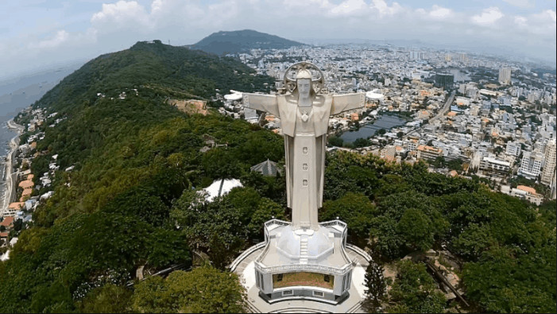
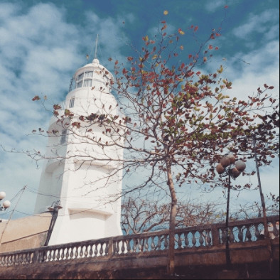

Tượng Chúa Kito là một trong những địa điểm tham quan Vũng Tàu nổi tiếng, không thể thiếu trong hành trình của du khách khi du lịch Vũng Tàu, bởi cảm giác chinh phục đầy thú vị tại phố biển sôi động này.
Địa chỉ: Nằm ở Thùy Vân, Phường 2, thành phố Vũng Tàu, Bà Rịa – Vũng Tàu
Giờ mở cửa: 07h00 sáng – 17h00 chiều
Hải đăng Vũng Tàu toạ lạc trên đỉnh núi Nhỏ, được người Pháp xây dựng nhằm mục đích chỉ đường, báo hiệu cho các tàu thuyền qua lại và nằm ở độ cao 149m so với mực nước biển. Hải Đăng Vũng Tàu được đánh giá là một trong những hải đăng cổ xưa nhất Việt Nam và Đông Nam Á. Bên trong ngọn hải đăng có cầu thang dẫn đến gần đỉnh hải đăng và có ban công để ngắm cảnh/p>

Nội dung